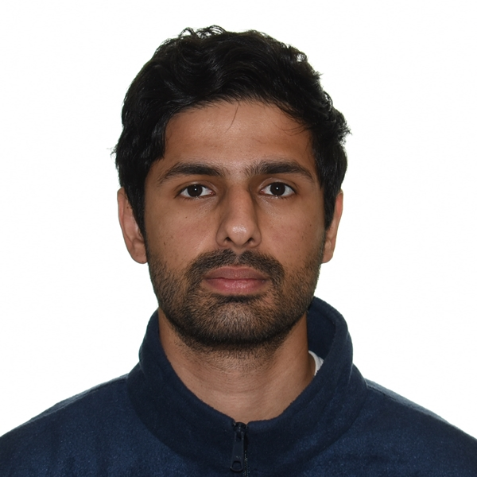

Kamran Rafique

Summary
Self-driven and detail-oriented engineer with five years of relevant industry experience. Areas of expertise include utilizing extensive lean manufacturing methodologies to reduce waste, performing continuous improvement (CI) projects to eliminate bottlenecks and optimize production, and leveraging data science & ML know-how to analyze, interpret, and visualize numeric data.
Education
- Bachelor of Applied Science, Manufacturing Engineering - University of British Columbia (2014-2019)
Work Experience
- Process Lead - Cascades
April 2022 - Present
- Currently working as a process lead at Cascades, the second largest packaging and tissue products manufacturing company in North America, under their corrugated containerboard division
- Spearheaded the implementation of the company’s Lean Production System, creating Cleaning, Inspection & Lubrication (CIL) documents, digitizing the production floor, creating SOPs to standardize processes and performing RCAs using 5-why methodology to investigate quality concerns and breakdowns
- Performed rapid changeovers (SMED) on rotary die cutters and flexo (FFG) machines by zeroing and timing the compensators, calibrating nip points and creating SOPs outlining best practices, helping to reduce set up times by 25% on the various converting machines
- Increased the corrugator average run speed by 8% in the year of 2024 by performing centerlining workshops on the highest running paper grade combinations. This involved creating recipe cards with optimal settings for each paper grade and training the corrugator crews on its use
- Designed, created and implemented a visual KPI dashboard on Excel using VBA macros enabling the crews to see production KPIs, enter breakdown information, report damaged dies and more in order to improve communication between management and the floor. This KPI dashboard became a best practice at the company and is being used at the new flagship Cascades plant in Bear Island, USA
- Materials Engineer - NewPro3D
February 2020 - July 2021
- Worked as the materials engineer at NewPro3D, an industrial SLA 3D printers manufacturing company based in North Vancouver, BC
- Responsible for the ongoing research and development of the NP1 and NP1-L printers including calibrating new resin materials, designing and assembling key components and rigorous testing to assess the repeatability and precision of the printed parts
- Collaborated with BASF to perform a technical study on the drilling and tapping behaviour of their rigid resin. The excerpt of the results is used by BASF in webinars and presentations to promote the use of the rigid resin in applications where drilling and tapping are required
- Ordered parts and assembled an open source in-house universal testing machine (UTM) in under $3000 by using an ASME academic paper as reference. Calibrated the UTM to provide tensile results within 5% accuracy relative to a professional-grade Instron machine. Used the tensile test results to determine optimum post-cure cycles of each of the resin materials offered by the company
- Used Python and data analytics to analyze the load cell data after failed prints to determine the cause of failure and took appropriate steps to prevent similar failures in future prints
- Manufacturing Engineer - UBC Composite Research Network
January 2018 - August 2018
- Worked with small and medium-sized enterprises (SME’s) to design, develop and test composite materials for numerous industries and applications, including aerospace (Boeing, Avcorp, Zodiac), and integrated energy services (Shawcor, Bionic Power)
- Hands-on experience in handling and layup of fiberglass (GFRP), carbon fiber (CFRP), and kevlar, as well as an in-depth knowledge of key manufacturing processes such as compression moulding and resin transfer moulding (RTM)
- Used design and simulation software (Solidworks and ABAQUS respectively) to investigate the potential of reducing the mass of an existing dragon-boat design without increasing the build cost by modifying the fiberglass orientation and assembly; reduced weight by 25% and cost by 30% respectively, by replacing chopped strand mat (CSM) hull with biaxial and triaxial fiberglass
Skills
- Data Analytics and Data Visualization: ★ ★ ★
- Microsoft Office Suite: ★ ★ ★ ★
- Organizational Skills: ★ ★ ★ ★
Awards and Certifications
- APSC Design and Innovation Day Industry Award for Capstone Project (2019)
- International Major Entrance Scholarship (IMES) Recipient, UBC (2014-2016)
- Chancellor’s Scholar Award Recipient, UBC (2014)
- Gold Medalist and MVP, Pakistan National Basketball Tournament (2013-2014)
Other